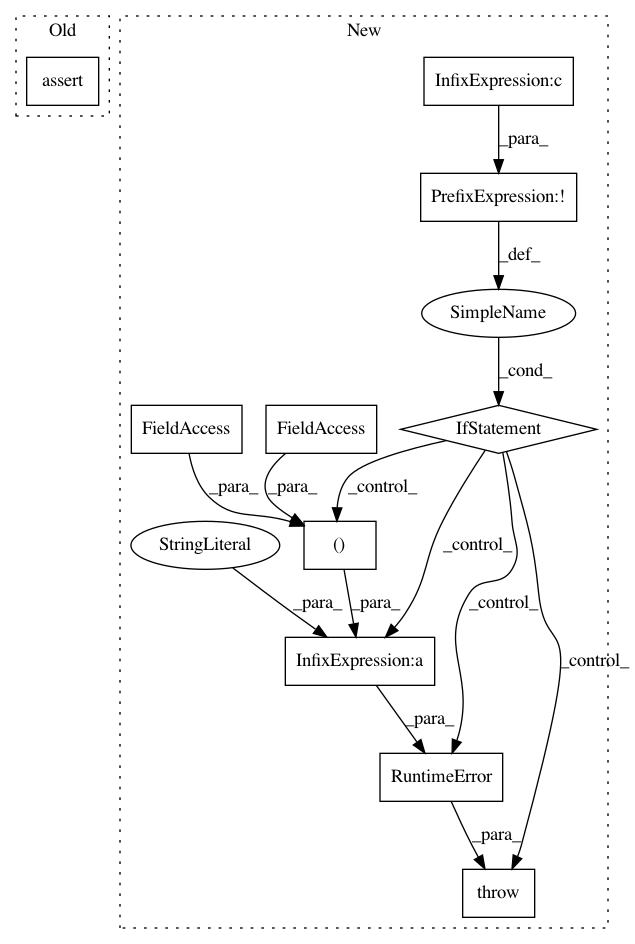

7457c1a6a034fd7e204c3849b23b6ef2a19979f0,skopt/space/space.py,Categorical,distance,#Categorical#,434
Before Change
Second category.
assert a in self
assert b in self
return 0 if a != b else 1
class Space:
After Change
* `b` [category]
Second category.
if not (a in self and b in self):
raise RuntimeError("Can only compute distance for values within "
"the space, not %s and %s." % (a, b))
return 1 if a != b else 0
class Space:
In pattern: SUPERPATTERN
Frequency: 3
Non-data size: 10
Instances
Project Name: scikit-optimize/scikit-optimize
Commit Name: 7457c1a6a034fd7e204c3849b23b6ef2a19979f0
Time: 2017-04-03
Author: betatim@gmail.com
File Name: skopt/space/space.py
Class Name: Categorical
Method Name: distance
Project Name: scikit-optimize/scikit-optimize
Commit Name: 7457c1a6a034fd7e204c3849b23b6ef2a19979f0
Time: 2017-04-03
Author: betatim@gmail.com
File Name: skopt/space/space.py
Class Name: Real
Method Name: distance
Project Name: scikit-optimize/scikit-optimize
Commit Name: 7457c1a6a034fd7e204c3849b23b6ef2a19979f0
Time: 2017-04-03
Author: betatim@gmail.com
File Name: skopt/space/space.py
Class Name: Integer
Method Name: distance